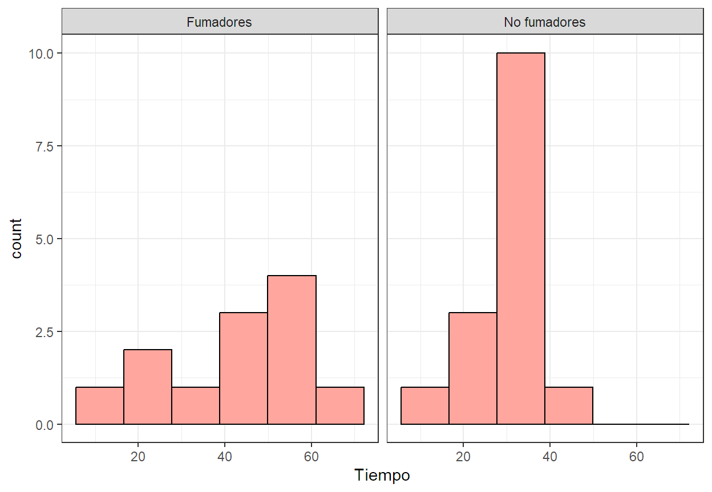
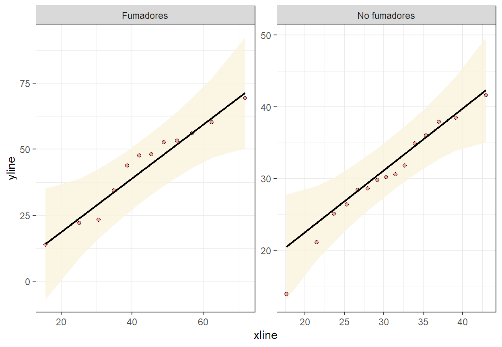
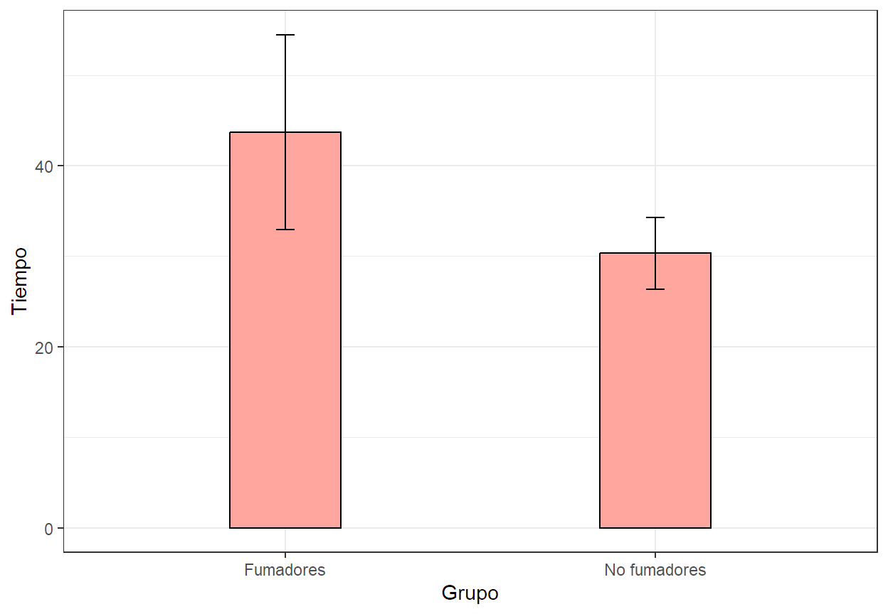
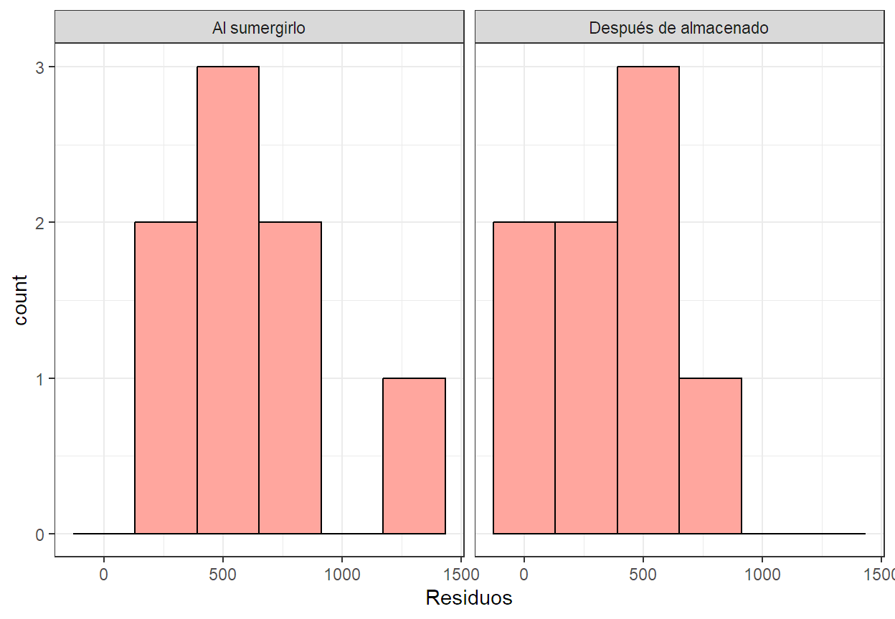
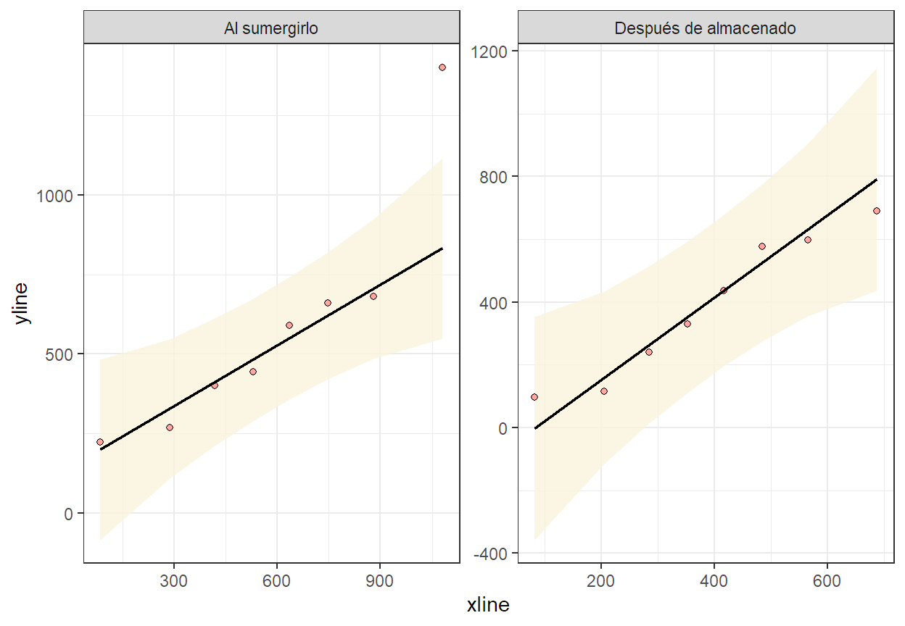

Code
library(ggplot2)
library(car)
library(tidyverse)
library(qqplotr)
library(descriptr)Cuando se trata de comparar dos grupos en un estudio, una de las preguntas más comunes es si hay una diferencia significativa entre sus medias. Este tipo de análisis es crucial en múltiples disciplinas, desde la biología hasta la psicología, pasando por la economía y la medicina. Las pruebas estadísticas diseñadas para comparar dos medias permiten determinar si las diferencias observadas entre los grupos son lo suficientemente grandes como para ser consideradas significativas, o si podrían haberse producido por azar. Dependiendo de las características de los datos, como la distribución y la varianza, se pueden emplear diferentes métodos, ya sean paramétricos o no paramétricos, para llevar a cabo esta comparación.
Estas pruebas asumen que los datos siguen una distribución normal y que las muestras tienen varianzas homogéneas (homocedasticidad).
Propósito: Compara las medias de dos grupos independientes.
Uso: Cuando se quiere comparar dos grupos diferentes (e.g., tratamiento vs. control) y los datos siguen una distribución normal.
Supuestos: Normalidad, homocedasticidad.
Función en R: t.test()
Propósito: Compara las medias de dos grupos relacionados (e.g., mediciones antes y después del tratamiento en los mismos sujetos).
Uso: Cuando se quiere comparar dos mediciones en el mismo grupo de sujetos o en grupos emparejados.
Supuestos: Normalidad de las diferencias.
Función en R: t.test()
Estas pruebas no asumen normalidad y son útiles cuando los datos no cumplen con los supuestos de las pruebas paramétricas.
Propósito: Compara las medianas de dos grupos independientes.
Uso: Alternativa a la prueba t para muestras independientes cuando los datos no son normales.
Supuestos: No requiere normalidad, pero los datos deben ser ordinales o continuos.
Función en R: wilcox.test()
Propósito: Compara las medianas de dos grupos relacionados.
Uso: Alternativa a la prueba t para muestras pareadas cuando los datos no son normales.
Supuestos: No requiere normalidad, pero los datos deben ser ordinales o continuos.
Función en R: wilcox.test()
En un estudio sobre el habito de fumar y sus efectos sobre los patrones de sueño una de las variables importantes es el tiempo que transcure antes de quedarse dormido. En este contexto consideraremos que se extrae una muestra de tamaño 12 de una población de fumadores y otra muestra de tamaño 15 de una población de no fumadores. A ambos grupos se les monitorea el sueño y se les registra el tiempo en minutos transcurrido antes de conciliar el sueño, los datos fueron los siguientes:
| Fumadores (S) | No Fumadores (N) |
|---|---|
| 69.3 | 28.6 |
| 56.0 | 25.1 |
| 22.1 | 26.4 |
| 47.6 | 34.9 |
| 53.2 | 29.8 |
| 48.1 | 28.4 |
| 23.3 | 38.5 |
| 13.8 | 30.2 |
| 52.7 | 30.6 |
| 34.4 | 31.8 |
| 60.2 | 41.6 |
| 43.8 | 21.1 |
| NA | 36.0 |
| NA | 37.9 |
| NA | 13.9 |
library(ggplot2)
library(car)
library(tidyverse)
library(qqplotr)
library(descriptr)Fumadores<-c(69.3,56.0,22.1,47.6,53.2,48.1,23.3,13.8,52.7,34.4,60.2,43.8)
No.Fumadores<-c(28.6,25.1,26.4,34.9,29.8,28.4,38.5,30.2,30.6,31.8,41.6,21.1,36.0,37.9,13.9)Como los datos de las variable de respuesta estan en forma de vectores separados, se debe agrupar toda la información en un libro de datos. Para ello creamos primero un vector con la información del factor con la función concatenar c(), luego agrupamos todo los valores (Factor y variable de respuesta) con la función data.frame() y finalmente cambiamos la naturaleza del factor de chr con la función as.factor().
Grupo<-c(rep("Fumadores",12),rep("No fumadores",15))
Datos<-data.frame(Grupo,Tiempo=c(Fumadores,No.Fumadores))
Datos$Grupo<-as.factor(Datos$Grupo)
head(Datos) Grupo Tiempo
1 Fumadores 69.3
2 Fumadores 56.0
3 Fumadores 22.1
4 Fumadores 47.6
5 Fumadores 53.2
6 Fumadores 48.1Puesto que el parámetro de interes es la diferencia de medias para un diseño de dos muestras independientes con varianzas desconocidas se deben verificar el comportamiento de la variable de respuesta en ambas muestras en cuanto a simétria (Normalidad) y variación (Homocedasticidad). En caso de no poder respaldar el supuesto de normalidad no se requiere verificar lo homocedasticidad.
#Gráficos.
#Histogram
ggplot(data = Datos, aes(x = Tiempo))+
geom_histogram(bins = 6, fill="#ffa69e", color="black")+
facet_wrap(.~Grupo,ncol = 2)+
theme_bw()
## Q-Q
ggplot(data = Datos, aes(sample = Tiempo))+
stat_qq_band(distribution = "norm",fill="#faf3dd")+
stat_qq_point(fill="#ffa69e", shape=21)+
stat_qq_line(distribution = "norm")+
facet_wrap(.~Grupo,ncol = 2,scales = "free")+
theme_bw()
El test de normalidad shapiro & wilks contrasta si las observaciones de una muestra aleatoria provino de un población con distribución normal. Este test es potente para probar la normalidad de un conjunto de datos siempre que se tenga máximo 2000 valores muestrales. A diferencia de otros test como el test K-S no permite probar la bondad de ajuste de los datos para distribuciones distintas de la distribución normal.
Estadístico de prueba:
\(W=\frac{b^2}{\sum(x_i-\bar{x})^2}\)
Hipótesis estadísticas: \(H_0:=\) Los datos provienen de una población que se ajusta a la distribución normal. \(H_1:=\) Los datos provienen de una población que no se ajusta a la distribución normal.
#Análitico.
shapiro.test(Fumadores)
Shapiro-Wilk normality test
data: Fumadores
W = 0.9452, p-value = 0.5682shapiro.test(No.Fumadores)
Shapiro-Wilk normality test
data: No.Fumadores
W = 0.96585, p-value = 0.7925Interpretación Vemos que a un nivel de signficancia del \(\alpha=05\) el test de normaidad shapiro & wilks no rechaza la idea del ajuste del tiempo en minutos que transcurre antes de conciliar el sueño a la distribución normal tanto para el grupo de fumadores, \(\ W(12)=0.94, p=0.57\) como para el grupo de no fumadores, \(\ W(15)=0.97, p=0.79\).
Puesto que no hay suficiente evidencia para rechazar el cumplimiento del supuesto de normalidad, se hace necesario que determinemos si la variación en el tiempo que transcure antes de conciliar el sueño es o no igual entre los dos grupos, para ello haremos uso de la función "var.test()" que realiza la prueba de razón F.
Estadístico de prueba:
\(F=\frac{S_1^2}{S_2^2}\)
Hipótesis estadísticas: \(H_0:=\) La variación del tiempo que transcure antes de conciliar el sueño es igual en ambos grupos. \(H_1:=\) La variación del tiempo que transcure antes de conciliar el sueño es diferente entre ambos grupos.
var.test(x =Fumadores ,y=No.Fumadores)
F test to compare two variances
data: Fumadores and No.Fumadores
F = 5.6327, num df = 11, denom df = 14, p-value = 0.003413
alternative hypothesis: true ratio of variances is not equal to 1
95 percent confidence interval:
1.820191 18.919318
sample estimates:
ratio of variances
5.632744 Interpretación La prueba F para dos varianzas arrojo una diferencia significativa a un nivel de signficancia del \(\alpha=05\) el en la variación en los tiempos que transcure antes de cociliar el sueño entre fumadores y no fumadores, \(\ F(11,14)=5.63, p=0.003\), que se estima en \(\ IC95\%[1.82-18.92]\) a favor del grupo de fumadores.
La prueba adecuada para determinar si existen evidencia estadística entre las medias de ambos grupos es una prueba semiparámetrica llamada t-welch. Para ejecutarla haremos uso de la función "t.test()" en donde el argumento lógico "var.equal" equivale a la conclusión obtenida en la prueba de homoedasticidad, dónde se indica "var.equal=TRUE" si las varianzas son iguales, de lo contrario se indica "var.equal=FALSE"
t.test(Fumadores, No.Fumadores,var.equal = FALSE)
Welch Two Sample t-test
data: Fumadores and No.Fumadores
t = 2.5654, df = 14.123, p-value = 0.02232
alternative hypothesis: true difference in means is not equal to 0
95 percent confidence interval:
2.204378 24.572289
sample estimates:
mean of x mean of y
43.70833 30.32000 ggplot(Datos,aes(Grupo,Tiempo))+
stat_summary(fun = mean, geom = "bar",fill="#ffa69e", color="black", width=0.3)+
stat_summary(fun.data = mean_cl_normal,geom ="errorbar",width=0.05)+
theme_bw()
ds_group_summary(data = Datos,gvar = Grupo,cvar = Tiempo) Tiempo by Grupo
-------------------------------------------------------------------
| Statistic/Levels| Fumadores| No fumadores|
-------------------------------------------------------------------
| Obs| 12| 15|
| Minimum| 13.8| 13.9|
| Maximum| 69.3| 41.6|
| Mean| 43.71| 30.32|
| Median| 47.85| 30.2|
| Mode| 13.8| 13.9|
| Std. Deviation| 16.92| 7.13|
| Variance| 286.18| 50.81|
| Skewness| -0.48| -0.62|
| Kurtosis| -0.69| 0.76|
| Uncorrected SS| 26072.97| 14500.82|
| Corrected SS| 3147.95| 711.28|
| Coeff Variation| 38.7| 23.51|
| Std. Error Mean| 4.88| 1.84|
| Range| 55.5| 27.7|
| Interquartile Range| 22.28| 8.05|
-------------------------------------------------------------------Análisis Para el grupo de estudio de fumadores, el menor tiempo registado requerido para conciliar el sueño oscilo entre 13.8 y 69.3 min, tomandoles en general alrededor de 43.7 min para conciliar el sueño \(\ (SD=16.92)\) y en donde la mitad de los participantes lograron conciliar el sueño en antes de los 47.8 min \(\ (IQR=31.6-53.9)\); en contraste, para los no fumadores el menor tiempo registado antes de conciliar el sueño fue de 13.9 min y el máximo de 41.6, tomandoles en general alrededor de 30.3 min \(\ (SD=7.13)\) y en donde la mitad de los participantes lograron conciliar el sueño en antes de los 30.2 min \(\ (IQR=27.4-35.5)\). La prueba de T-welch reflejo una diferencia significativa en los tiempos que transcure antes de cociliar el sueño entre ambos grupos, \(\ t(12.5)=2.2456, p=0.04\), donde aquellas personas que son fumadores tardan más minutos en conciliar el sueño con una diferencia estimada en minutos de \(\ IC95\%[2.20-24.57]\) con respecto aquellos que no son fumadores.
En un estudio realizado por el Departamento de Nutrición Humana y Alimentos del Virginia Tech se registraron los siguientes datos sobre los residuos de ácido sórbico en jamón, en partes por millón, inmediatamente después de sumergirlo en una solución de sorbato y después de 60 días de almacenamiento:
| Al sumergirlo (A) | Después (D) |
|---|---|
| 224 | 116 |
| 270 | 96 |
| 400 | 239 |
| 444 | 329 |
| 590 | 437 |
| 660 | 597 |
| 1400 | 689 |
| 680 | 576 |
library(ggplot2)
library(car)
library(tidyverse)
library(qqplotr)
library(descriptr)A<-c(224,270,400,444,590,660,1400,680)
D<-c(116,96,239,329,437,597,689,576)Como los datos de las variable de respuesta estan en forma de vectores separados, se debe agrupar toda la información en un libro de datos. Para ello creamos primero un vector con la información del factor con la función concatenar c(), luego agrupamos todo los valores (Factor y variable de respuesta) con la función data.frame() y finalmente cambiamos la naturaleza del factor de chr con la función as.factor().
Grupo<-c(rep("Al sumergirlo",8),rep("Después de almacenado",8))
Datos<-data.frame(Grupo,Residuos=c(A,D))
Datos$Grupo<-as.factor(Datos$Grupo)
head(Datos) Grupo Residuos
1 Al sumergirlo 224
2 Al sumergirlo 270
3 Al sumergirlo 400
4 Al sumergirlo 444
5 Al sumergirlo 590
6 Al sumergirlo 660Puesto que el parámetro de interes es la diferencia de medias para un diseño de muestras pareadas solo se debe verificar el comportamiento de la variable de respuesta en cuanto a simétria (Normalidad) en ambos grupos.
#Gráficos.
#Histogram
ggplot(data = Datos, aes(x = Residuos))+
geom_histogram(bins = 6, fill="#ffa69e", color="black")+
facet_wrap(.~Grupo,ncol = 2)+
theme_bw()
## Q-Q
ggplot(data = Datos, aes(sample = Residuos))+
stat_qq_band(distribution = "norm",fill="#faf3dd")+
stat_qq_point(fill="#ffa69e", shape=21)+
stat_qq_line(distribution = "norm")+
facet_wrap(.~Grupo,ncol = 2,scales = "free")+
theme_bw()
#Análitico.
shapiro.test(A)
Shapiro-Wilk normality test
data: A
W = 0.83222, p-value = 0.06261shapiro.test(D)
Shapiro-Wilk normality test
data: D
W = 0.92984, p-value = 0.5146RESPONDE: ¿Es posible validar el supuesto de normalidad para ambos conjuntos? Justifique reportando a partir de las salidas.
La prueba adecuada para determinar si existen evidencia estadística entre las medias de ambos grupos es una prueba parámetrica llamada t. En esta prueba el argumento "paired" de la función "t.test()" que ejecuta la prueba, se usa para indicar si el diseño corresponde a un diseño de muestras pareadas "paired=TRUE" ó si se trata de una diseño de dos muestras independientes "paired=FALSE".
t.test(x = A,y = D,paired = TRUE)
Paired t-test
data: A and D
t = 2.6731, df = 7, p-value = 0.03186
alternative hypothesis: true mean difference is not equal to 0
95 percent confidence interval:
22.9225 374.3275
sample estimates:
mean difference
198.625 ds_group_summary(data = Datos,gvar = Grupo,cvar = Residuos) Residuos by Grupo
-------------------------------------------------------------------
| Statistic/Levels| Al sumergirlo|Después de almacenado|
-------------------------------------------------------------------
| Obs| 8| 8|
| Minimum| 224| 96|
| Maximum| 1400| 689|
| Mean| 583.5| 384.88|
| Median| 517| 383|
| Mode| 224| 96|
| Std. Deviation| 370.82| 225.79|
| Variance| 137504.9| 50982.7|
| Skewness| 1.72| -0.03|
| Kurtosis| 3.67| -1.66|
| Uncorrected SS| 3686312| 1541909|
| Corrected SS| 962534| 356878.9|
| Coeff Variation| 63.55| 58.67|
| Std. Error Mean| 131.1| 79.83|
| Range| 1176| 593|
| Interquartile Range| 297.5| 373|
-------------------------------------------------------------------RESPONDE: ¿Es posible afirmar que el tiempo de almacenamiento supone un efecto significativo en la cantidad de residuos de ácido sórbico (ppm)?, de ser así, ¿En cuánto se estima la diferencia? Justifique reportando a partir de las salidas.